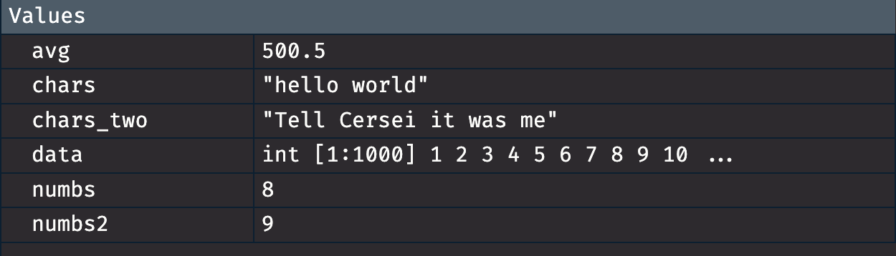
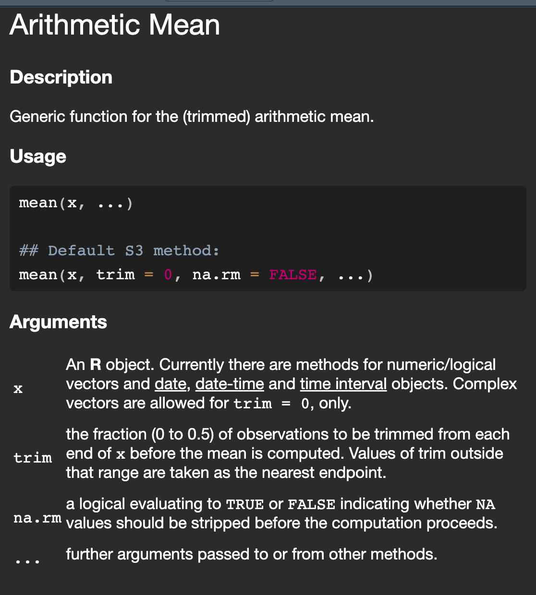

2+2 ## addition[1] 44-2 ## subtraction[1] 2600*100 ##multiplication[1] 60000100/10 ##division[1] 1010*10/(3^4*2)-2 ## Pemdas [1] -1.382716log(100) # takes the log of 100[1] 4.60517sqrt(100) # sqrt of 100[1] 10In this chapter I will introduce you to the basics of R and object oriented programming. These may be relatively new concepts for you and thats okay! I encourage you to follow along in Rstudio. Open up an R script and either type in the code
Good news you never have to buy a TI-84 again you can use R as a fancy calculator.
2+2 ## addition[1] 44-2 ## subtraction[1] 2600*100 ##multiplication[1] 60000100/10 ##division[1] 1010*10/(3^4*2)-2 ## Pemdas [1] -1.382716log(100) # takes the log of 100[1] 4.60517sqrt(100) # sqrt of 100[1] 10However, if we want to reuse stuff we need to assign them to an object. This applies for all the numbers we calculated above and datsets you read in! This is somewhat unintuitive if you have never worked with an object oriented program. However, you will eventually get the hang of it!
In the installation chapter I showed did some assigning without really telling you, but now it is time to explain what is going on. R is what is known as an object oriented programming language (OOP), meaning that everything in R is an “object.” This is useful for understanding the concept of assignment, or how we specify certain objects in memory so we can use them elsewhere in a script. Values need to be assigned to objects using the assignment operator <-, < followed by -, and then on the right side you tell R what goes in that object. This can be as simple as specifying a calculation such as 4 + 4 or passing numeric values to a function such as sum(9, 6).
The keyboard shortcut for <- is alt + -
numbs <- 4 + 4
chars <- "hello world"
numbs2 <- 3*3
numbs + numbs2[1] 17When we assign things the resulting values are not returned so we can “print” the object explicitly using print or referring to it by name.
print(numbs)[1] 8chars [1] "hello world"One fairly common error you will run into in R is something along this line.
chars_two <- "Tell Cersei it was me"
charstwoError in eval(expr, envir, enclos): object 'charstwo' not foundWhile this is a fairly minor typo if we look at the global environment we will get a hint.

When we asked R to print charstwo it is going to look in the global environment for something called charstwo to print and if it can’t find it then R will give up. We don’t have anything called charstwo but we do have something called chars_two. We know what we meant when we made the typo, but the computer does not! Computers are really good at doing things, but they require really explicit instructions so if we type chars_two it will work.
chars_two[1] "Tell Cersei it was me"One way to make life a little bit is have a consistent naming convention! This will generally help you because you will develop some tendencies. However, this is an error we all still get because it is easy to forget what all your objects are named. You can either look at your global environment or scroll up and see what past you named the object.
The best practice is to use concise descriptive names.
When loading in data typically I do raw_my_dataset_name and after data all of my cleaning I do clean_my_dataset_name
_, or . There are a few different naming conventions that people use.
if used when something meets a certain condition the code will do something. else is used when the if condition is not met
for is how we construct something called a for loop. while is used to construct something called a while loop. These are ways to repeat the same task over and over again and are building blocks of packages in R.
How we specify user defined functions. This is building block of programming in R
Logical constants in R
is returned when an expression or function results in an undefined value
This is way R represents you doing something mathematically impossible like 1/0 or log(0)
This is a way R represents you doing something mathematically impossible like 0/0. NaN stands for not a real number
This is the most common way that R represents missing values
Sometimes you will run into names that do not follow naming conventions so if you name something my object name R will get mad about it so you have you use two ` (the key right beside 1) like this.
`my object name`RBefore we can proceed to a functional programming framework, however, it is first necessary to introduce the basic data structures you will encounter in R. These include, though are not limited to data frames, factors, vectors, lists, and functions. In this section we will spend a brief amount of time introducing data structures with a focus on vectors, data frames, lists, and functions in particular.
If you look at our example, we are kind of repeating ourselves. What we can do is to create what is called a vector using c which will smash the numbs vector together. Vectors have lots of uses in R and can make your life a lot easier. A vector comes in two flavors we will focus on one of the two main types.
my_vec <- c(numbs, numbs2)
my_vec[1] 8 9my_other_vec <- c(1:100)
my_other_vec [1] 1 2 3 4 5 6 7 8 9 10 11 12 13 14 15 16 17 18
[19] 19 20 21 22 23 24 25 26 27 28 29 30 31 32 33 34 35 36
[37] 37 38 39 40 41 42 43 44 45 46 47 48 49 50 51 52 53 54
[55] 55 56 57 58 59 60 61 62 63 64 65 66 67 68 69 70 71 72
[73] 73 74 75 76 77 78 79 80 81 82 83 84 85 86 87 88 89 90
[91] 91 92 93 94 95 96 97 98 99 100This is called an atomic vector. This is just computer science, for everything in the vector is the same class. The class of an object tells you what you can do and cannot do to stuff. To get the class of a vector, you do something like this
class(my_vec)[1] "numeric"class(my_other_vec)[1] "integer"Since this is a numeric variable we can do some math stuff to it. For example we stored 8 in a vector called numbers. Lets add 8 to each number in my_other_vec.
numbs + my_other_vec [1] 9 10 11 12 13 14 15 16 17 18 19 20 21 22 23 24 25 26
[19] 27 28 29 30 31 32 33 34 35 36 37 38 39 40 41 42 43 44
[37] 45 46 47 48 49 50 51 52 53 54 55 56 57 58 59 60 61 62
[55] 63 64 65 66 67 68 69 70 71 72 73 74 75 76 77 78 79 80
[73] 81 82 83 84 85 86 87 88 89 90 91 92 93 94 95 96 97 98
[91] 99 100 101 102 103 104 105 106 107 108We can get the sum of the entire vector using the sum function
sum(my_other_vec)[1] 5050We can do this because these vectors have a class of numeric. What would happen if we added our chars vector to our numbs vector?
chars + numbs Error in chars + numbs: non-numeric argument to binary operatorHopefully this error makes sense intuitevly. If we were in class and I asked you to find the answer to 8 + hello world you would rightfully be really confused. This is essentially what is going on with R.
You can construct vectors with different kinds of stuff but it will lead to some strange behavior.
examp_weird <- c(1:4, "Cat", "dog", 5)
class(examp_weird)[1] "character"The best-case scenario is R gives up. The worst case is that R will go about its day, and you do not even realize something is wrong. DO NOT MIX ClASSES in these kinds of vectors.
The main classes you will work with in R are listed below.
Among the most common data structures you will encounter in R, at least in this course’s context, is a tabular data format called data frames. Data frames are simply collections of vectors or, in perhaps more familiar terms, data frames in R are similar to spreadsheets in Microsoft Excel. Data frames are a special kind of list where you can hold multiple classes together, but each vector must be of the same length. Length is how much stuff is in it. You can find the length of something in R like this
length(my_vec)[1] 2Let’s see what happens if we try and create a data frame with differing lengths.
my_data <- data.frame(id = letters,
effect = 1:4)Error in data.frame(id = letters, effect = 1:4): arguments imply differing number of rows: 26, 4It gets mad because data frames have to have the same length.
my_data <- data.frame(id = letters,
effect = 1:26)
head(my_data) # this just prints the first 5 rows id effect
1 a 1
2 b 2
3 c 3
4 d 4
5 e 5
6 f 6This is just how we do stuff to objects in R. I will not have you write your own function but you will work with them frequently enouch that it might be helpful to understand how they work. In R, functions are defined sets of actions that perform a specific task these are often tasks that are repetitive. Since R does not have a division function lets just create one.
# divide some stuff
divide <- function(x, y) {
out <- x/y
return(out)
}
divide(x = 200, y = 100)[1] 2The function is defined by two arguments, x and y. Inside the function x is being divided by y, then assigned to a temporary object called out then we are printing it to the console using return. Every function you run into in R takes a series of arguments. For some functions the list is quite extensive others can take one or even two arguments.
# this is a really simple function with one argument
printer <- function(x){
print(x)
}
printer(x = "Cool")[1] "Cool"Throughout the course of the semester you will run into errors and warnings. This is a totally normal part of coding. The first thing we should do is differentiate between the two things.
Errors: These are things that will legitimately not make your code run whether these are misspelled object names, missing commas, using incorrect classes in functions, etc…
Warnings: These just mean your code will run but there are some caveats attached like ggplot dropping missing observations or missing values are introduced by coercing to a vector to a numeric type
Both of these serve very important functions in R. Lets say that we only want people to print characters with our printer functions. What we can do is stop them from doing that with well the stop function.
printer2 <- function(x){
if(!isTRUE(is.character(x))){
stop(paste0("x should be of type 'character', but is of type '", typeof(x), "'instead"))
}
else{
print(x)
}
}
printer2(2)Error in printer2(2): x should be of type 'character', but is of type 'double'insteadNotice that 2 is not returned in the console.
This may be a bit aggressive so we could simply warn them that they didn’t supply characters to the function.
printer3 <- function(x){
if(!isTRUE(is.character(x))){
warning(paste0("x should be of type 'character', but is of type '", typeof(x), "'instead"))
print(x)
}
else{
print(x)
}
}
printer3(2)Warning in printer3(2): x should be of type 'character', but is of type
'double'instead[1] 2Notice that printer3 simply warns us that we should supply a character to our function, but returns 2 in the console. When we supply a character vector to our printer functions they will run with no warnings or errors
printer2(chars_two)[1] "Tell Cersei it was me"printer3(chars_two)[1] "Tell Cersei it was me"Sometimes we need to work with data when they meet a certain condition. In our warnings and errors section what we did was test whether the input of our function was a character. R comes with a full set of logical and booleans.
| Test | Meaning | Test | Meaning |
|---|---|---|---|
x < y
|
Less than |
x %in% y
|
In set |
x > y
|
Greater than |
is.na(x)
|
Is missing |
==
|
Equal to |
!is.na(x)
|
Is not missing |
x <= y
|
Less than or equal to | ||
! y
|
Not | ||
x >= y
|
Greater than or equal to | ||
x != y
|
Not equal to | ||
x | y
|
Or | ||
x & y
|
And |
You should be fairly familiar with at least these 5.
1 > 2[1] FALSE1 < 2[1] TRUE1 == 2 [1] FALSE1 >= 2[1] FALSE1 <= 2[1] TRUEThe reason we use == rather than = for equals kind of comes down to the fact that the = is used for argument evaluation and object assignment.
There are technically three ways to assign objects in R but the most commonly used is <-. Personally I use the =. To keep this guide consistent with recommended style guides I have just decided to use the <-.
The ones you are less familiar with may be these
1 != 2
1 < 2 | 3 > 4
1 < 2 & 3>4
4 %in% 1:10You are likely familiar with the not equal sign \(\neq\) in Boolean when we want to say something is not something we use the !. So if we want to test whether 1 is not equal to 2. We do this
1 != 2 [1] TRUETo test whether or not something is TRUE we use the | which is just shift + the key above the enter key. This will return TRUE if one side of the statement is true. So when we do
1 < 2 | 3 > 4[1] TRUEIt will return true because 1 is less than two.
Sometimes we want to test whether both the left and right statement are true. So if we repeat this same excericse but swap out the | for the & it will return FALSE
1 < 2 & 3 > 4[1] FALSEThis is because while 1 is less than 2 three is not greater than 4.
The last one looks a bit strange. What this is doing is seeing if the thing to the left of the %in% is inside the set of things on the right of the%in%`. So if we do this
1:10 [1] 1 2 3 4 5 6 7 8 9 104 %in% 1:10[1] TRUEIt will return TRUE because we are defining a set of number. Defining sets also works with characters.
joshs_fav_foods <- c("Pizza", "Burgers", "Pho", "Wings")
"beets" %in% joshs_fav_foods[1] FALSENotice that beets are not defined as one of my favorite foods. So it will return FALSE
That was a lot. The final thing that we will talk about in this section is indexing. Indexing is how we get to stuff in R. For your sake, you hope there is a point-and-click way to do things. Unfortunately, there is not. However, indexing is relatively easy. So let’s return to our example data set.
Since statisticians created R for well other statisticians we start indexing at 1 We index stuff in R using [], [[]], or $. These all have their place in R.
For [], it takes two arguments [rows I want to see, columns I want to see], we can feed names, positions, and tests to []
We will use the data.frame we defined earlier. Lets just take a look at the first 5 rows
head(my_data) id effect
1 a 1
2 b 2
3 c 3
4 d 4
5 e 5
6 f 6Lets just print the letter a to the console. Since the letter a is in the first row and the first column we do.
my_data[1,1][1] "a"We can use’:’ to expedite this process if we want to return multiple rows or columns.
my_data[1:2, 1][1] "a" "b"We can also use names.
my_data[, "id"] [1] "a" "b" "c" "d" "e" "f" "g" "h" "i" "j" "k" "l" "m" "n" "o" "p" "q" "r" "s"
[20] "t" "u" "v" "w" "x" "y" "z"my_data$effect [1] 1 2 3 4 5 6 7 8 9 10 11 12 13 14 15 16 17 18 19 20 21 22 23 24 25
[26] 26For the most part, we will be doing stuff with the $ but being aware of [] is important to know about because they are the building blocks of R. They will appear a lot in some people’s replication materials, and having some intuition about what is going on is helpful. For simple things like calculating the mean of a column this is quicker.
In this class I will have compute some summary statistics like the mean and standard deviation as well as some thinks like the correlation coefficient. The quickest way to do this is to use the $ to get the numbers you want. So if we wanted to get the mean of the effect column we would do this.
mean(my_data$effect)[1] 13.5One of the most fundamental things in R is figuring out how to ask for help. The quickest way is to use ?functionname where function name is just a stand in for all the R functions that are availbable. Lets say our dataset looked like this
our_data <- data.frame(values = c(1:5, NA),
id = letters[1:6])Here values goes from 1-5 with a missing value. If we wanted to compute the mean we would do
mean(our_data$values)[1] NAPresumably you thought the mean would be something like 3. Here it returns NA because it is really conservative when it comes to missing values in functions like mean. The data could be missing for a whole bunch of reasons in the real world but in this case we just want the mean without much thought about why that is. We can look at the help documentation like this
?meanWhich will pop up this window in the help panel in the bottom right of Rstudio that looks like this.

If you look at the help documentation you may see an argument that says na.rm = FALSE that is telling mean how to handle missing values. na.rm = FALSE in regular human speak just reads as don’t remove missing values. So to get the numbers we wanted all we need to do is switch the na.rm = FALSE to na.rm = TRUE
mean(our_data$values, na.rm = TRUE)[1] 3If you do more complex mathy things like lm it will just delete the missing values which is not always great
When you first open Rstudio you have some preloaded packages like mean. However, I will guarantee that when you start working with R more and you need to do more complex things you will have to use other functions. The tidyverse is not one of these packages that is loaded when you open Rstudio so copying and pasting the code from the knitted document will not work. That is because R does not have the instructions it needs to run those commands. To do this you have to download the package. Like with everything in R there are like a bajillion ways to do this. The first one is by using the packages window

Here you just type in the name of the package and then click install. All that is doing is just running this code
install.packages("ggplot2")If you want to install multiple packages what you can do is something like this.
install.packages(c("ggplot2", "palmerpenguins", "MetBrewer"))Remember how earlier I taught you how to define a vector? Well that is all we are doing here.
Once you install the packages you will not need to reinstall the package each time. However, these packages are just installed and not loaded. Unlike excel or other analysis software you have to explicitly tell R that you want to use a package. The way we do this is by library(packagename) like this
library(tidyverse)You should always load the packages at the top of your script or quarto document. R executes things sequentially meaning it starts from line one and ends once it gets to the bottom of the script or there is an error.
library(palmerpenguins) # loads in the palmerpenguins data
ggplot(penguins, aes(x = body_mass_g)) +
geom_histogram()Error in ggplot(penguins, aes(x = body_mass_g)): could not find function "ggplot"library(ggplot2)
ggplot(penguins, aes(x = body_mass_g)) +
geom_histogram()
Notice how the first set of code generates an error while the second set of code does not. This is because in the library(ggplot2) line we have told R to load in the ggplot instructions.
One thing you will notice is that once you install the package you do not need to put the package name in quotation marks. The reason why is due to the fact that R now recognizes the package as defined objects with given names.
A standard R script/quarto document will have the instructions loaded at the top like this.
library(ggplot2)
library(palmerpenguins)
library(MetBrewer)One of the nice things about Rstudio is if you open somebody else’s R script or quarto document and they do something like library(packageIdonthave) Rstudio will ask if you want to install it.
Example and Discussion provided in R for Data Sciency by Hadley Wickham↩︎